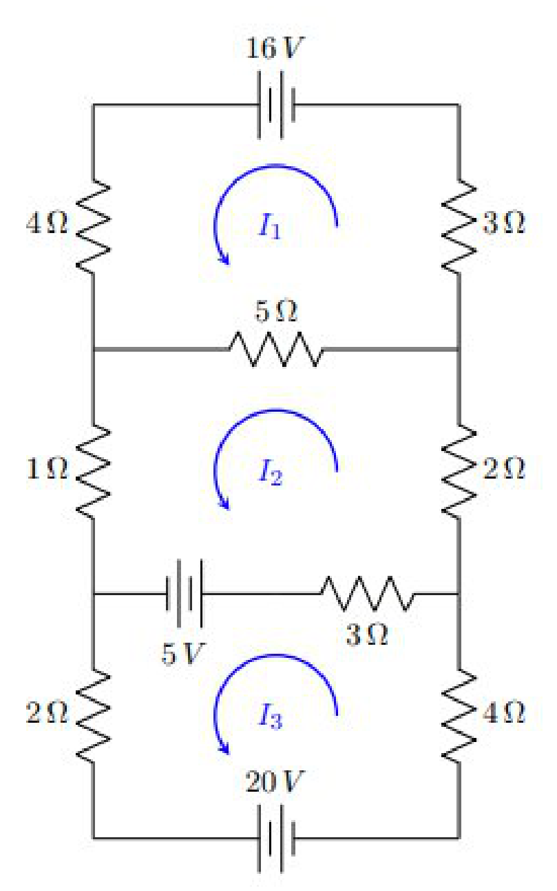

rref (Gauss-Jordan) o con inv(A)*b.| Apartado | Resultado |
|---|---|
| Problema 1 | $I_1=\frac{86}{57}\approx 1{.}5088$ A, $\ I_2=\frac{8}{19}\approx 0{.}4211$ A, $\ I_3=-\frac{451}{171}\approx -2{.}6374$ A |
| Problema 2.1 | $x\approx(84{.}8808,\ 10{.}9484,\ 14{.}5502,\ -28{.}7405)$, igual con rref y con inv(A)*b |
| Problema 2.2 | Datos truncados: $x\approx(38{.}3995,\ 5{.}3508,\ 6{.}2057,\ -12{.}7336)$ |
| Problema 2.3 | $\|A\|\approx2{.}0893$, $\ \|A^{-1}\|\approx272{.}6479$, $\ \mathrm{Cond}(A)\approx 569{.}65\gg1$: mal condicionada |
format short, 4 decimales); no se ha ejecutado Matlab en este equipo. Si escribes antes
format long, verás unos 15 decimales (1.50877192982456…). En Matlab el decimal va con
punto, y 8.4881e+01 significa $8{.}4881\cdot10^{1}=84{.}881$.
Se piden las corrientes $I_1$, $I_2$ e $I_3$ aplicando la ley de Ohm y las reglas de Kirchhoff, resolviendo el sistema con Matlab.
Resultado práctico: en la ecuación de cada malla, el coeficiente de su propia corriente es la suma de todas sus resistencias, y el de cada malla vecina es menos la resistencia compartida.

| Malla | Resistencias | Compartida con | Pilas |
|---|---|---|---|
| 1 | 4 + 3 + 5 = 12 | malla 2: 5 Ω | +16 |
| 2 | 5 + 1 + 2 + 3 = 11 | malla 1: 5 Ω; malla 3: 3 Ω | +5 |
| 3 | 3 + 2 + 4 = 9 | malla 2: 3 Ω | −5 − 20 = −25 |
En forma matricial, $A\,\mathbf{i}=\mathbf{b}$:
$$\M{rrr}{12&-5&0\\-5&11&-3\\0&-3&9}\M{c}{I_1\\I_2\\I_3}=\M{r}{16\\5\\-25}$$La matriz es simétrica, con la diagonal positiva y el resto negativo o cero. Siempre sale así cuando todas las mallas giran en el mismo sentido, y sirve para comprobar el planteamiento.
A = [12 -5 0; -5 11 -3; 0 -3 9] % coeficientes: una fila por malla b = [16; 5; -25] % pilas, como vector columna M = [A, b] % matriz ampliada R = rref(M) % Gauss-Jordan I = inv(A)*b % comprobación con la inversa
A =
12 -5 0
-5 11 -3
0 -3 9
b =
16
5
-25
M =
12 -5 0 16
-5 11 -3 5
0 -3 9 -25
R =
1.0000 0 0 1.5088
0 1.0000 0 0.4211
0 0 1.0000 -2.6374
I =
1.5088
0.4211
-2.6374
rref deja la matriz identidad a la izquierda, y la última columna es la solución. inv(A)*b da lo mismo.
En el examen no hay Matlab: el mismo sistema se resuelve por Gauss-Jordan sobre la matriz ampliada, con fracciones exactas. Cualquier secuencia de operaciones válida lleva al mismo resultado. Esta evita fracciones hasta el final.
$3\cdot(-3)+9=0$: elimina $I_3$ de la fila 2 de un golpe.
Todo es múltiplo de $-5$: queda $3I_1-6I_2=2$.
$12-4\cdot3=0$: la fila 1 queda solo con $I_2$: $19I_2=8$.
$2+6\cdot\frac{8}{19}=\frac{86}{19}$ y $-25+3\cdot\frac{8}{19}=\frac{-475+24}{19}=-\frac{451}{19}$.
Es la misma red: mismas pilas en la misma posición y mallas en sentido antihorario. Solo cambian los valores, y los signos del sistema caen en el mismo sitio:
| Lay (ejemplo 2) | Esta actividad | |
|---|---|---|
| Malla 1 | $11I_1-3I_2=30$ | $12I_1-5I_2=16$ |
| Malla 2 | $-3I_1+6I_2-I_3=5$ | $-5I_1+11I_2-3I_3=5$ |
| Malla 3 | $-I_2+3I_3=-25$ | $-3I_2+9I_3=-25$ |
| Solución | $(3,\ 1,\ -8)$ A | $(1{.}5088,\ 0{.}4211,\ -2{.}6374)$ A |
El Lay dice que la pila es positiva si la corriente va «desde el lado positivo (más largo) hacia el negativo». Significa que la corriente sale por el borne $+$ y recorre el circuito hasta el $-$, que es la regla usada aquí. Errata del PDF: donde pone «rama CD es $I_2+I_3=9$» debe decir $I_2-I_3=1-(-8)=9$.
Datos del enunciado:
$$A=\M{rrrr}{-0{.}185865&-0{.}387014&-0{.}530553&-0{.}964501\\-0{.}021981&0{.}389760&-0{.}593141&-0{.}240008\\-0{.}191130&0{.}019832&-0{.}676614&-0{.}901565\\0{.}139872&0{.}819616&-0{.}341303&0{.}540443};\qquad b=\M{r}{-0{.}012965\\0{.}669141\\0{.}060438\\0{.}347338}$$A = [-0.185865 -0.387014 -0.530553 -0.964501;
-0.021981 0.389760 -0.593141 -0.240008;
-0.191130 0.019832 -0.676614 -0.901565;
0.139872 0.819616 -0.341303 0.540443];
b = [-0.012965; 0.669141; 0.060438; 0.347338];
R = rref([A, b]) % Gauss-Jordan sobre la matriz ampliada
x = inv(A)*b % inversa por el vector del lado derecho
R =
1.0000 0 0 0 84.8808
0 1.0000 0 0 10.9484
0 0 1.0000 0 14.5502
0 0 0 1.0000 -28.7405
x = 84.8808 10.9484 14.5502 -28.7405
Los dos métodos dan la misma solución:
$x\approx(84{.}8808,\ 10{.}9484,\ 14{.}5502,\ -28{.}7405)$. Con más decimales (format long):
$x_1=84{.}88082707$, $x_2=10{.}94843367$, $x_3=14{.}55017690$, $x_4=-28{.}74050627$.
El punto y coma al final de A = [...]; evita que Matlab repita la matriz en pantalla. Dentro de los
corchetes, el espacio separa columnas y el ; separa filas.
Truncar es cortar: se quedan los dos primeros decimales y el resto se tira, sin redondear y conservando el signo. Por ejemplo, $0{.}389760\to0{.}38$ (redondeando sería $0{.}39$) y $-0{.}185865\to-0{.}18$ (no $-0{.}19$).
$$A_t=\M{rrrr}{-0{.}18&-0{.}38&-0{.}53&-0{.}96\\-0{.}02&0{.}38&-0{.}59&-0{.}24\\-0{.}19&0{.}01&-0{.}67&-0{.}90\\0{.}13&0{.}81&-0{.}34&0{.}54};\qquad b_t=\M{r}{-0{.}01\\0{.}66\\0{.}06\\0{.}34}$$At = [-0.18 -0.38 -0.53 -0.96;
-0.02 0.38 -0.59 -0.24;
-0.19 0.01 -0.67 -0.90;
0.13 0.81 -0.34 0.54];
bt = [-0.01; 0.66; 0.06; 0.34];
Rt = rref([At, bt])
xt = inv(At)*bt
Rt =
1.0000 0 0 0 38.3995
0 1.0000 0 0 5.3508
0 0 1.0000 0 6.2057
0 0 0 1.0000 -12.7336
xt =
38.3995
5.3508
6.2057
-12.7336
Las matrices truncadas se llaman At y bt para no borrar la A original, que hace falta en el
apartado 3.
$\mathrm{Cond}(A)=\|A\|\cdot\|A^{-1}\|$, con la norma de Frobenius $\|M\|=\sqrt{\mathrm{tr}(M^TM)}$. La diagonal de $M^TM$ tiene las sumas de cuadrados de cada columna de $M$, así que $\mathrm{tr}(M^TM)$ es la suma de los cuadrados de todas las entradas. La norma de Frobenius es la «longitud» de la matriz vista como un vector.
Ai = inv(A) % inversa de la matriz ORIGINAL (sin truncar) nA = sqrt(trace(A'*A)) % norma de A nAi = sqrt(trace(Ai'*Ai)) % norma de la inversa c = nA*nAi % número de condición
Ai = -76.5759 196.2550 -47.2586 -128.3419 -15.1586 25.5734 -1.4199 -18.0644 -19.4695 35.1178 -3.9841 -25.7968 30.5121 -67.3986 11.8683 46.1710
nA =
2.0893
nAi =
272.6479
c =
569.6541
$\|A\|=\sqrt{4{.}3653}\approx2{.}0893$, $\ \|A^{-1}\|=\sqrt{74\,336{.}87}\approx272{.}6479$ y
$\ \mathrm{Cond}(A)\approx 569{.}65$. No se usa la función cond de Matlab, como pide el enunciado. La transpuesta
se escribe con la comilla recta '; la curva ’ que sale al copiar del PDF da error.
| Componente | Datos originales (2.1) | Datos truncados (2.2) | Truncada / original |
|---|---|---|---|
| $x_1$ | 84.8808 | 38.3995 | 0.45 |
| $x_2$ | 10.9484 | 5.3508 | 0.49 |
| $x_3$ | 14.5502 | 6.2057 | 0.43 |
| $x_4$ | −28.7405 | −12.7336 | 0.44 |
Sistema $x+y=2,\ \ x+1{.}01y=2{.}01$, de solución $(1,\,1)$. Si el 2.01 se mide como 2.02 (un 0.5 % de diferencia), queda $0{.}01y=0{.}02$, así que $y=2$ y $x=0$: la solución salta a $(0,\,2)$.
$\|A\|=\sqrt{1+1+1+1{.}0201}\approx2{.}005$, $\ \|A^{-1}\|=\sqrt{101^2+3\cdot100^2}=\sqrt{40\,201}\approx200{.}5$ y $\mathrm{Cond}(A)\approx402\gg1$: mal condicionada. Para un 2 × 2, la inversa sale con la fórmula de abajo, y la norma de Frobenius es la raíz de la suma de los cuadrados de las entradas.
$$\M{cc}{a&b\\c&d}^{-1}=\frac{1}{ad-bc}\M{rr}{d&-b\\-c&a}$$| Para | Se escribe |
|---|---|
| Definir una matriz o un vector columna | A = [1 2 3; 4 5 6; 7 8 9], b = [1; 2; 3] |
| Matriz ampliada y Gauss-Jordan | M = [A, b], rref(M); la solución es la última columna |
| Inversa y producto | inv(A), inv(A)*b |
| Transpuesta, traza y raíz | A', trace(M), sqrt(x) |
| Más decimales | format long (en Octave también output_precision(12)) |